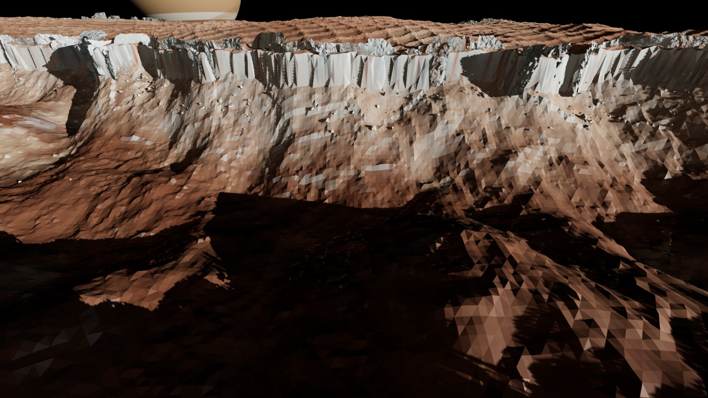
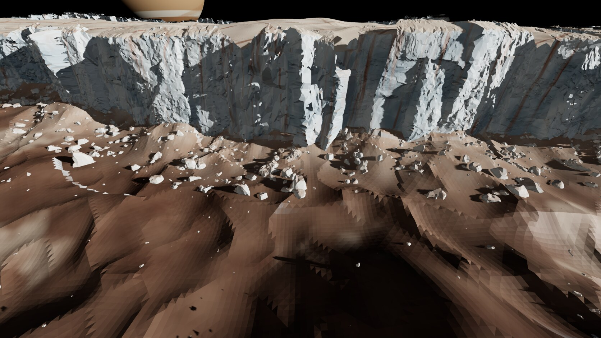
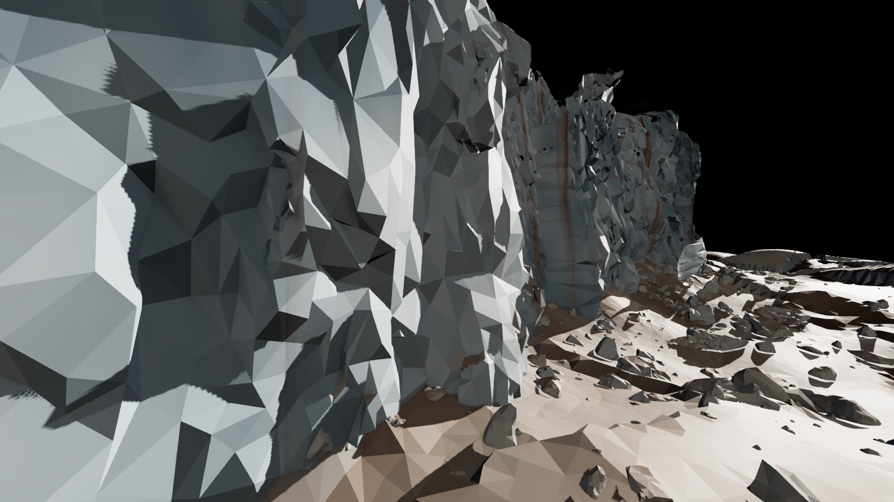
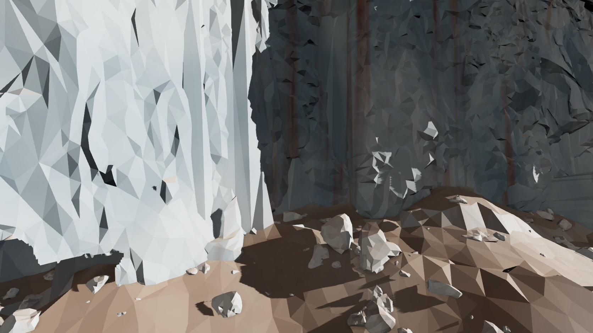
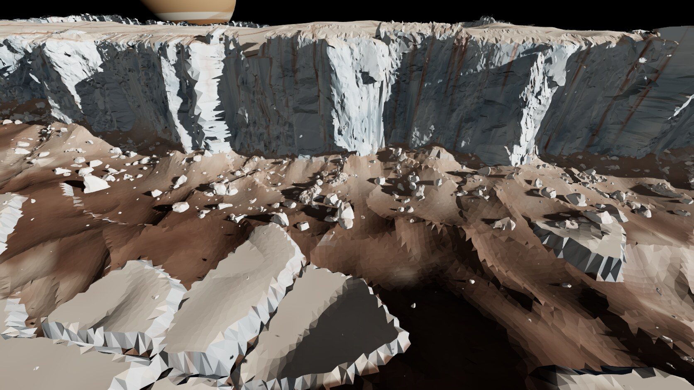
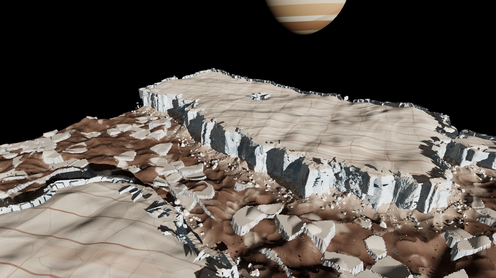

Recovered session evidence / Europa
Conamara chaos edge
Real Europa plate relief with terrestrial cliff scans re-materialled as ice. Procedural detail completes the chaos margin.
Historical captures show the original prototype. The live showcase removes its unlicensed Mirror Fault wall donor and uses the existing credited wall kit. The new Reddit capture shows the adapted scene.
Original notes and credits
Capture and comparison archive
Original filenames preserve round and view context. These are rendered prototypes, not source photographs.











